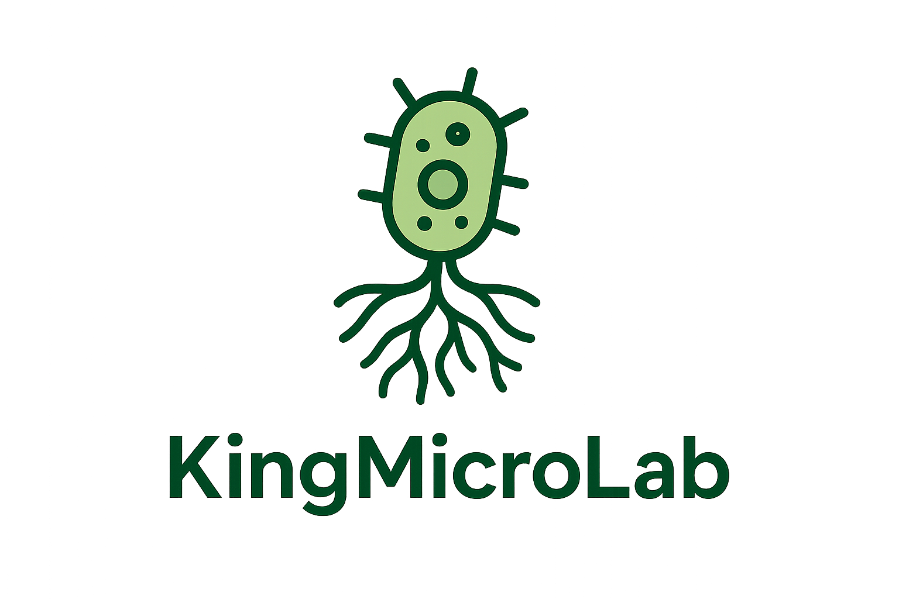

Research at KingMicroLab
Our research explores the intricate relationships between plant roots and their microbial partners. We focus on understanding how root exudates shape microbial communities, and how we can leverage these relationships to improve plant stress tolerance and soil health.
Manipulating Below-Ground Feedback
Roots form dynamic relationships with microorganisms essential for healthy plant functioning and stress resilience. We investigate how drought, nutrient stress, and exudation patterns influence these microbial relationships, linking root physiology to microbial community structure and function.
Manipulating Biotic Interactions
We explore how microbial interactions shape community establishment and functioning, using both bottom-up and top-down approaches to manipulate microbial diversity in soil. This helps us understand how biodiversity loss impacts essential soil functions.

Microbial Physiology and Function
We study how both microbe–microbe and microbe–host interactions influence microbial physiology and adaptation to new environments. By linking microbial traits with host exudation patterns, we identify mechanisms driving cooperation and competition in root microbiomes.
Fieldwork and Functional Assays
We combine high-throughput sequencing with field and lab-based assays to examine how diversity, nutrient cycling, and microbial function respond to ecological change. From forest ecosystems to agricultural soils, our experiments aim to connect microbial processes with measurable ecosystem outcomes.
Contact Information
Email: yourlabemail@university.edu
Department of Microbiology, Your University, City, Country